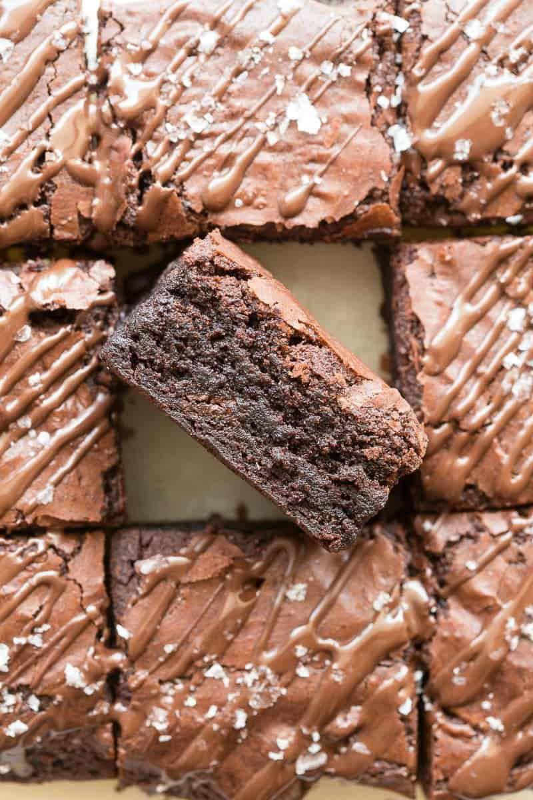

Recipe for Protein Brownies
These protein brownies are super fudgy, gooey, and need just four ingredients to make! No flour, no eggs, and no butter needed, I love how they are a guilt-free dessert fix
BACK

Ingredients
- 1/2 cup Almond butter
- I cup Banana - measured as mashed
- 1/4 cup Cocoa powder
- 1/2 cup Protein powder
- Salt - to taste
- Optional:
- Dark chocolate chips
- Vanilla extract
Instructions
- Preheat the oven to 180C/350F. Line an 8 x 8-inch pan with parchment paper and set aside.
- In a high speed blender or mixing bowl, combine all your ingredients and blend or mix until smooth.
- Transfer the brownie batter to the lined pan and bake for 15-20 minutes, or until the tops are firm.
- Remove the brownies from the oven and gently press down on the tops to form a crackly top. Let them cool completely before slicing and serving.